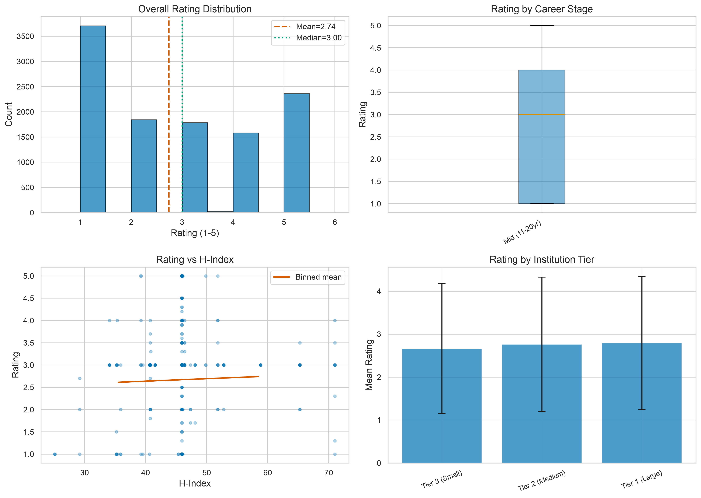
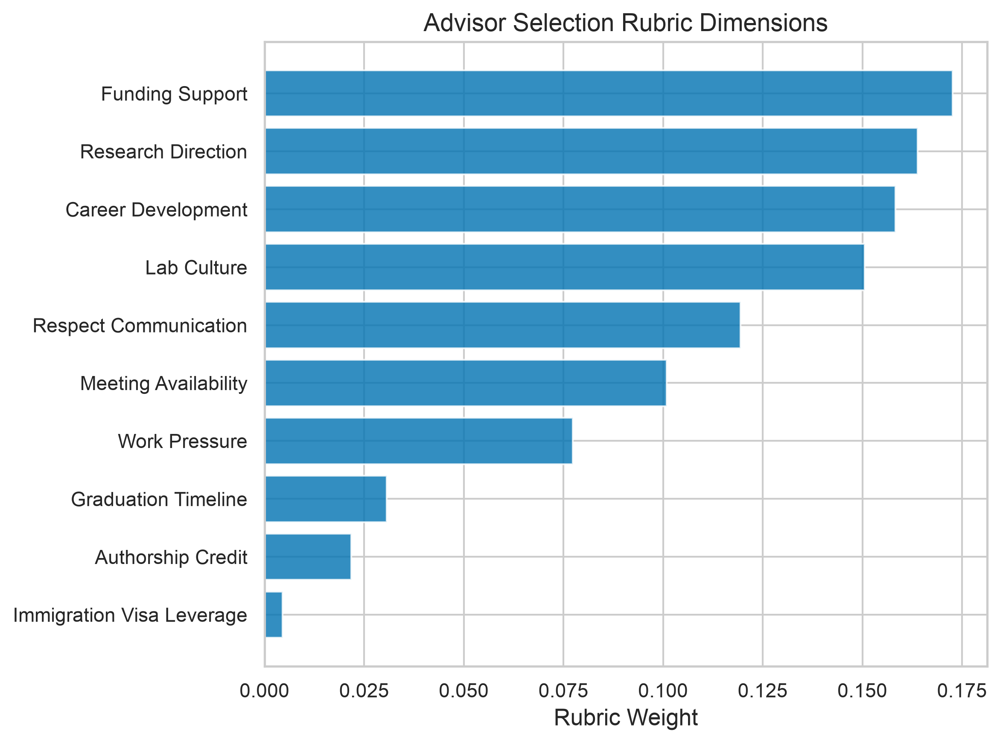

Share of profiles rated 1★ vs. 5★ (mean 2.74). Ratings are strongly bimodal: anonymous platforms attract extreme experiences, so a single number is nearly uninformative — read the review text.
CS-ML-Advisor-Helper: An Evidence-Based Tool for Choosing Your PhD Advisor
University of Chicago
Choosing a PhD advisor is one of the highest-stakes decisions in a research career. We analyzed 11,311 advisor profiles across 490 universities and 12,344 real reviews from the OpenAdvisor platform, and distilled what actually matters into a 10-dimension, behavior-only rubric. Answer the short questionnaire below about an advisor you are considering: the tool gives you a preliminary read, flags what you still need to find out, and generates a structured prompt you can paste into any LLM (Claude, ChatGPT, DeepSeek, …) for a deeper analysis of whether this advisor is a good fit for you.
The Advisor Helper
Answer what you know about the advisor — from talking to current or former students, lab pages, or review platforms. Choose "I don't know yet" (or leave numbers blank) freely: unanswered dimensions become your checklist of questions to ask. Nothing you type leaves this page.
—
Preliminary rubric score (0–100, weighted)
—
Information coverage (share of rubric weight you could answer)
—
Red flags detected
⚠ Red flags
❓ Highest-weight things you still need to find out
📊 Reading the platform rating
🤖 Your prompt for deeper LLM analysis
This tool stops here by design — a questionnaire cannot decide for you. Copy the prompt below and paste it into an LLM of your choice to get a personalized analysis of whether this advisor is likely a good fit, and what to verify before you commit.
Tip: after the LLM answers, ask it to role-play a current student of this advisor and interview it with the unanswered rubric questions — then go ask real students the same things.
What the data says
Rating variance explained by professional metrics (h-index, citations, career stage) in the matched subset. Fame is not mentorship: student experience is driven by behavior, not CV.
Factor by which keyword-based theme classification over-identifies themes in Chinese review text versus LLM (DeepSeek) classification — a caution for anyone mining bilingual review platforms.

The practical consequences for applicants: (1) expect bimodal ratings and never trust a platform score alone; (2) read review text, not numbers — the scores are uncalibrated; (3) use behavioral questions as a checklist when talking to current and former students; and (4) triangulate multiple sources, because no single platform or metric substitutes for direct investigation. The questionnaire above operationalizes exactly this.
The 10-dimension, behavior-only rubric
| Dimension | Key question for applicants | Weight |
|---|---|---|
| Meeting Availability | How often does the advisor meet with students? Typical duration? | 0.20 |
| Respect & Communication | How do current students describe the advisor's communication style? | 0.18 |
| Funding Support | What is the funding situation? Guaranteed RA/TA semesters? | 0.15 |
| Work Pressure | What are work expectations? Attrition rate in the lab? | 0.12 |
| Career Development | Where do alumni go? Does the advisor support internships? | 0.10 |
| Research Direction | How are projects assigned? Student autonomy in direction? | 0.10 |
| Lab Culture | Collaborative or competitive? How do lab members interact? | 0.07 |
| Graduation Timeline | Average time to degree? Students who left without completing? | 0.05 |
| Authorship Credit | What are authorship norms? How are contributions credited? | 0.02 |
| Immigration/Visa | How does the advisor support international students' visa needs? | 0.01 |
All dimensions are behavioral and structural — the rubric deliberately excludes demographic factors. Weights blend theme prevalence in 12,344 reviews with qualitative judgment, and should be read as starting points rather than precise measurements (keyword theme detection over-identifies in Chinese text; see the paper). The rubric is a tool for investigation, not for ranking people.

Paper & citation
Full methodology, ethics protocol, and limitations are in the paper: Portraits of Graduate Advising: Advisor Rating Correlates and an Evidence-Based Rubric for PhD Applicants (PDF). Analysis code, scrapers, and LaTeX source live in the CS-ML-Advisor-Helper repository. No named individuals appear in the paper or code output; reviews are treated as subjective reports, never as ground truth about any person.
@misc{yao2026portraits,
title = {Portraits of Graduate Advising: Advisor Rating Correlates and an
Evidence-Based Rubric for PhD Applicants},
author = {Dixi Yao},
year = {2026},
url = {https://dixiyao.github.io/csmladvisor/},
}